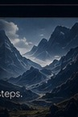

Technical Investor Deck
A complex platform explained for a nontechnical investment audience.
Presentation · 16 slidesTECHNICAL DOCUMENTS AND PRESENTATIONS
InTelluric turns technical ideas into documents and presentations people can act on. From a blank page or an existing draft, we handle the research, analysis, writing, visuals, and technical review—so your work is ready for funding, approval, investment, litigation, and other high-stakes decisions.
A complex platform explained for a nontechnical investment audience.
Presentation · 16 slidesA study protocol organized for scientific and ethics review.
Document · 22 pagesA review of the available evidence, assumptions, technical risks, and next steps.
Report · 18 pages
Technical evidence organized for counsel, experts, and formal proceedings.
Presentation · 30 slidesSend the notes, draft, or source material you already have. We’ll review the situation and determine what kind of document, presentation, or technical analysis the project requires.